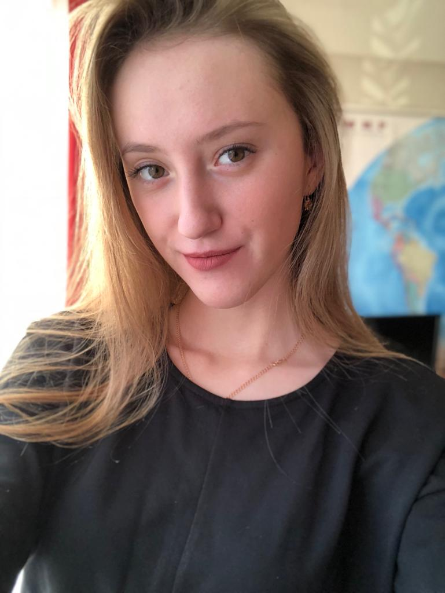

|
|
| Главная | Распространения компьютерных вирусов | Файлы программ | Файлообменные (пиринговые) сети | ИТОГ | Глоссарий | Об авторе |
|  |
Караваева Дарья Сергеевна
|
|
Образование:
Дополнительные курсы:
Хобби:
Дополнительная информация:
|
|
| Главная Распространения компьютерных вирусов Файлы программ Файлообменные (пиринговые) сети ИТОГ Глоссарий Об авторе Карта сайта |


|
|
denis.strokan2000@mail.ru Strokan Denis. 2019 |